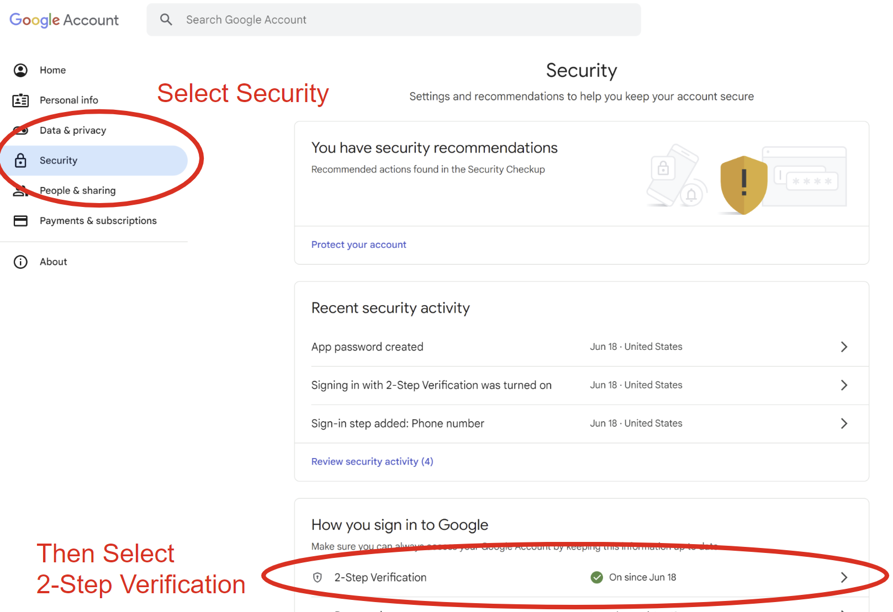
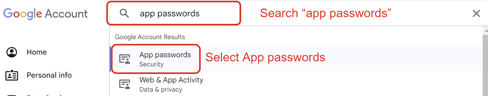
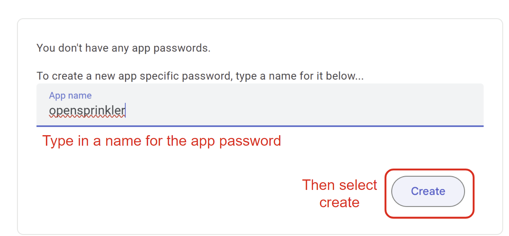
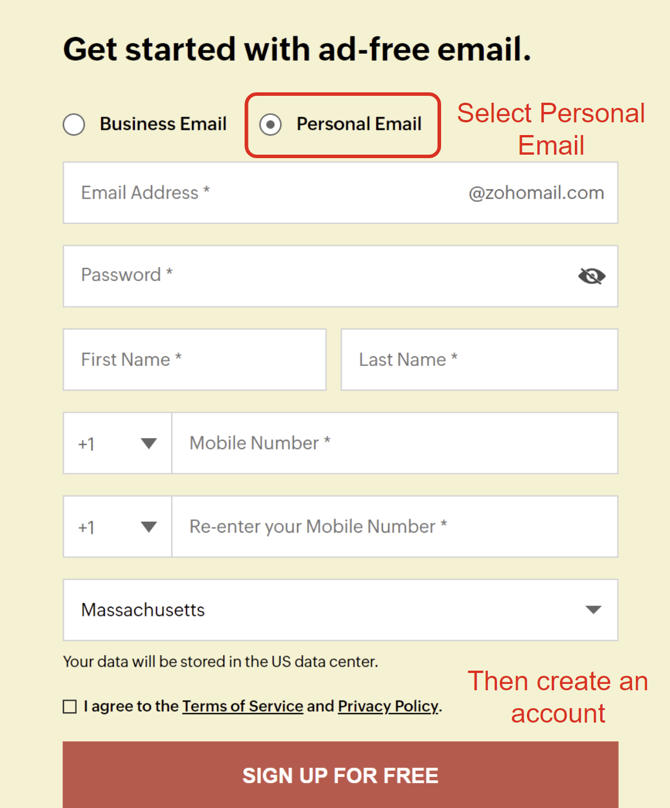
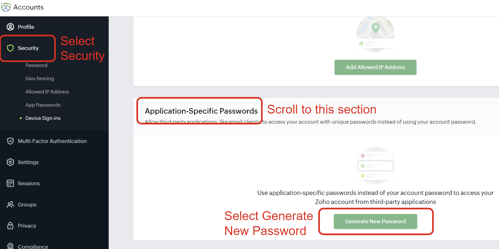
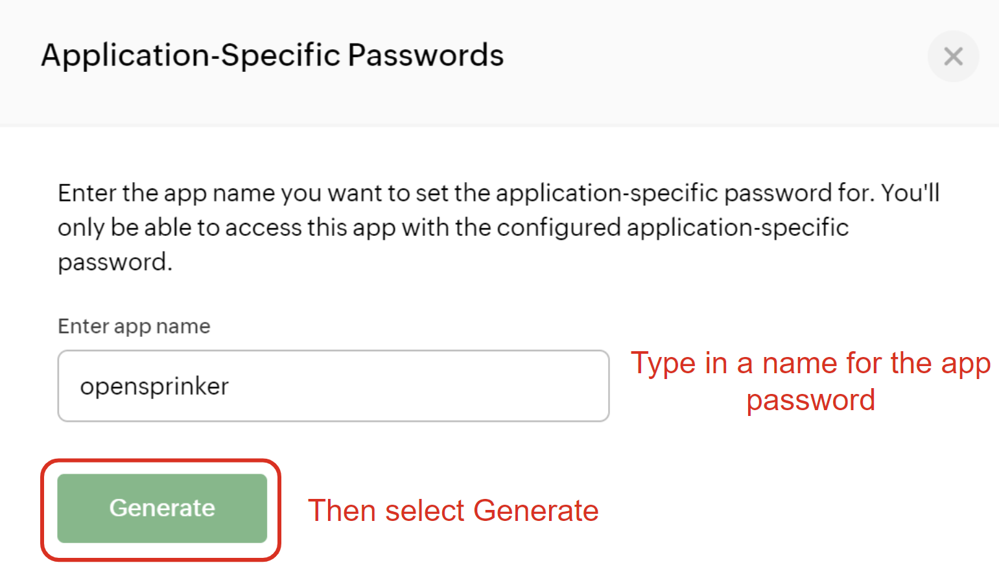
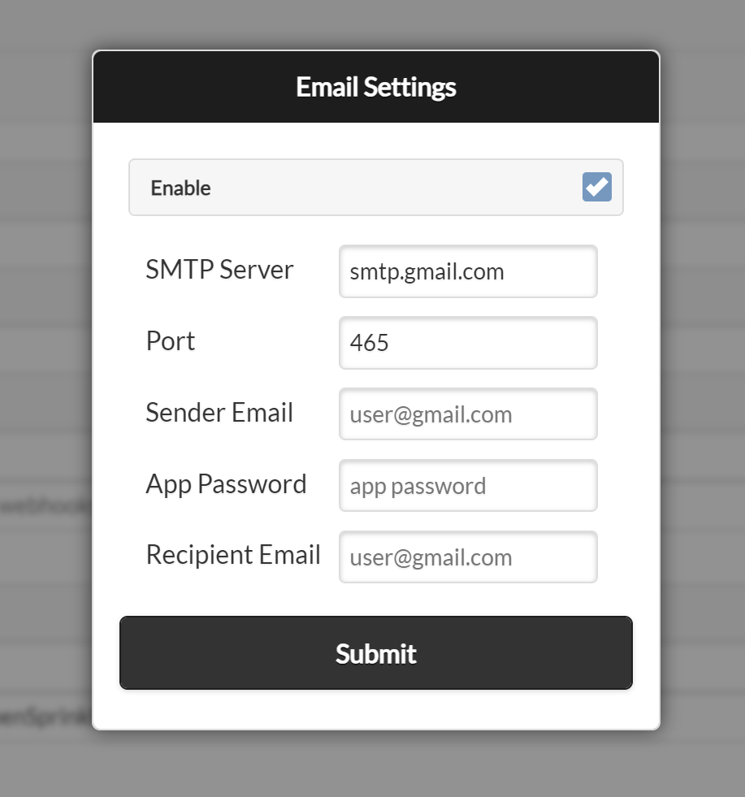

Setting Up Email Notifications
Starting with firmware 2.2.1, OpenSprinkler supports email notifications, offering an alternative to IFTTT Webhooks.
Requirements:
- Minimum Firmware Version: 2.2.1
- Minimum App/UI Version: 2.4.1
Note
This guide also applies to OpenGarage firmware 1.2.3 and later, which supports the same email-notification setup.
How Email Notifications Work and Best Practices
OpenSprinkler sends email notifications using a user-selected SMTP (Simple Mail Transfer Protocol) server, such as Gmail or Zoho Mail.
- When a notification event occurs, the firmware connects to the configured SMTP server and sends the message.
- OpenSprinkler v3 and v4 use implicit TLS, normally on port 465. SMTP providers that require STARTTLS on port 587 may not work with these controllers.
- OSPi supports implicit TLS on port 465, STARTTLS on port 587, and unencrypted SMTP on port 25. Encrypted SMTP is strongly recommended.
- Gmail and Zoho Mail have been verified to work with OpenSprinkler. Other SMTP services may also work if they support a compatible authentication and connection mode.
To enable email notifications, provide the following SMTP settings:
| Parameter | Description |
|---|---|
| SMTP Server | e.g. smtp.gmail.com or smtp.zoho.com |
| Port | 465 (implicit TLS) |
| Sender Email | The sender (i.e. "From") email address (must belong to a valid email account). |
| App Password | An application-specific password generated by your email provider (NOT your normal email login password). |
| Recipient Email | The receiver (i.e. "To") email address where notifications will be received. |
- The Sender Email + App Password act as login credentials for the SMTP server.
- The Recipient Email can be any email address and does not have to use the same provider as the sender.
Most SMTP services limit the number of messages that an account can send each day. As of this writing:
- Gmail: 500 messages per day
- Zoho Mail: 50 messages per day
Limits vary by account type and may change over time. Check the current Gmail sending limits or Zoho Mail rates and limits, and confirm that your account permits automated notifications.
Exceeding a provider's limits may temporarily prevent the sender account from sending mail. We recommend:
- Create a dedicated sender email and app password just for notifications.
- Use a different recipient email to receive alerts.
By following these recommendations, you can set up email notifications without affecting your primary email accounts.
Step 1: Create a Sender Email Account and App Password
Option 1: Using Gmail SMTP
- Navigate to this page to create a new personal Gmail account. Even if you already have a Gmail account, consider creating a separate one dedicated to notifications.
- After creating this account, navigate to myaccount.google.com. Once there, select the Security tab and scroll down to 2-Step Verification. Google will not let you create an app password without this enabled. See the screenshot below.

- Follow the steps to activate 2-Step verification, then go back to myaccount.google.com and enter app passwords into the search bar at the top. Select App Passwords in the search results.

- On the app passwords screen, enter an App name (e.g. opensprinkler) and press Create.

- A popup window will show a 16-character password in the format
"xxxx xxxx xxxx xxxx". Save it securely because this is the only time it is shown. When entering it in OpenSprinkler, omit the spaces. If you lose it, create a new app password.
Note
Google App Passwords require 2-Step Verification and may not be available for some managed, security-key-only, or Advanced Protection accounts. See Google's App Password documentation for current requirements.
Option 2: Using Zoho SMTP (Alternative to Gmail)
- Navigate to the Zoho Mail website to create a personal account. Make sure to select Personal Email, not the default Business Email.

- Once you have created your account and logged in, navigate to accounts.zoho.com. Select the Security tab, find Application-Specific Passwords, and click Generate New Password.

- A window will open to create a new app password. Enter an app name (for example, OpenSprinkler) and click Generate. Save the password securely because this is the only time it is shown. If you lose it, create a new app password.
Note
In some cases, Zoho may ask you to verify your account password. Complete the prompt, return to the app-password page, and click Generate again.

Step 2: Configure Email Settings
On the OpenSprinkler homepage, navigate to Edit Options → Integration. Click Tap to Configure next to Email Notifications, enter the required parameters, enable email notifications, and click Submit.
| Parameter | Value |
|---|---|
| SMTP Server | smtp.gmail.com (for Gmail) or smtp.zoho.com (for Zoho Mail) |
| Port | 465 |
| Sender Email | The email address created in Step 1 |
| App Password | The application-specific password generated in Step 1 |
| Recipient Email | Any existing email address where you want to receive notifications. |
For Zoho Mail, use the SMTP hostname shown in your account's server-configuration details if it differs from smtp.zoho.com.

Step 3: Choose Notification Events and Set Device Name
The final step is to choose which events will trigger email notifications and configure a custom Device Name for easy identification. Go to Edit Options → Integration, click Notification Events, and select from the available events:
- Program Start: Triggered when a program is scheduled or skipped. The message includes its weather and sensor adjustments when applicable.
- Sensor 1 Update: Triggered when Sensor 1 is configured and its status changes.
- Sensor 2 Update: The same as above, but for Sensor 2.
- Sensor 3 Update and Sensor 4 Update: Same as above, for Sensors 3 and 4 (OpenSprinkler v3.4 and v4 only).
- Rain Delay Update: Triggered when the rain delay status changes.
- Flow Sensor Update: Triggered after a program cycle finishes if the flow sensor is enabled.
- Weather Adjustment Update: Triggered when the watering percentage changes.
- Controller Reboot: Triggered when the controller restarts. On OpenSprinkler v3 and v4, the message includes the reboot cause and device IP address.
- Station Finish: Triggered when a station (zone) completes its run.
- Station Start: Triggered when a zone begins running.
- Flow Alert: Triggered when a zone finishes running and the flow rate exceeds the set threshold.
- Under/Overcurrent Fault: Triggered when an undercurrent or overcurrent fault is detected. Available starting with firmware 2.2.1(3).
For Bundle Station runs, only the bundle leader generates Station Start and Station Finish notifications; other stations in the bundle do not generate separate messages.
Warning
If your controller runs many stations daily, consider disabling high-frequency events such as Station Start and Station Finish. This helps avoid provider sending limits. Because each email connection takes time, too many notification events can cause delays, slow web/app responses, and skipped short watering cycles.
Below Notification Events, you can enter a custom Device Name. This Device Name is included in all email messages, making it easier to identify which controller sent the message. This is especially helpful if you manage multiple OpenSprinkler devices.
Important Notes
- Notification events apply to MQTT, email, and IFTTT notifications. If you make changes to the Notification Events selection, keep in mind that the changes apply to all three methods if enabled.
- Multiple OpenSprinkler devices can share the same email settings, provided their combined traffic remains within the provider's limits and policies.
- If needed, create separate sender email accounts for each OpenSprinkler device while keeping the same recipient email for all.